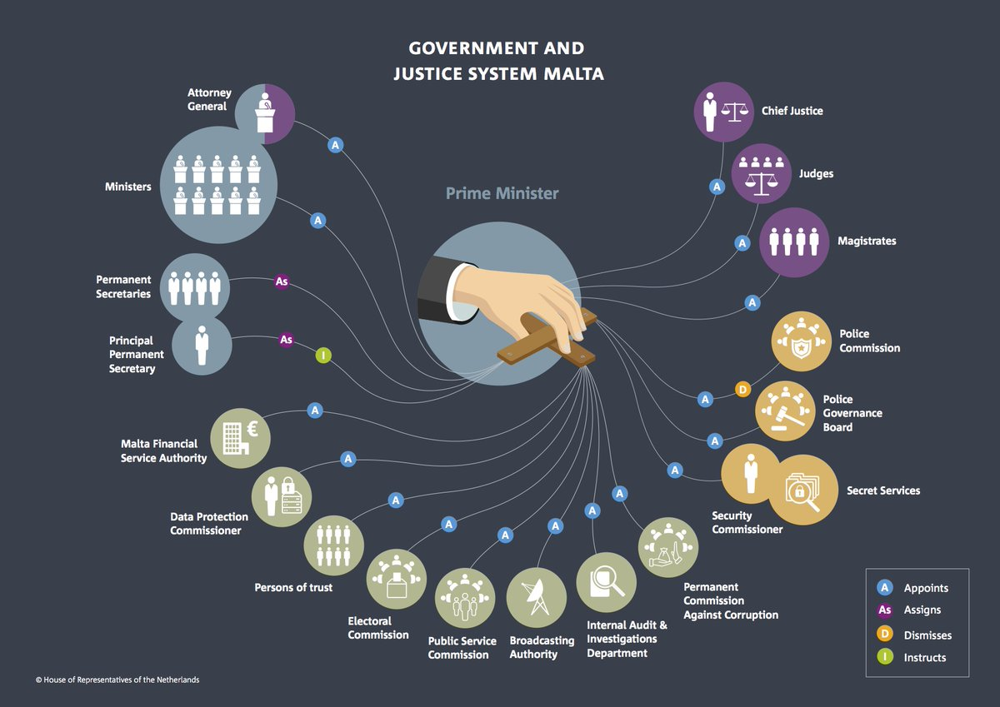
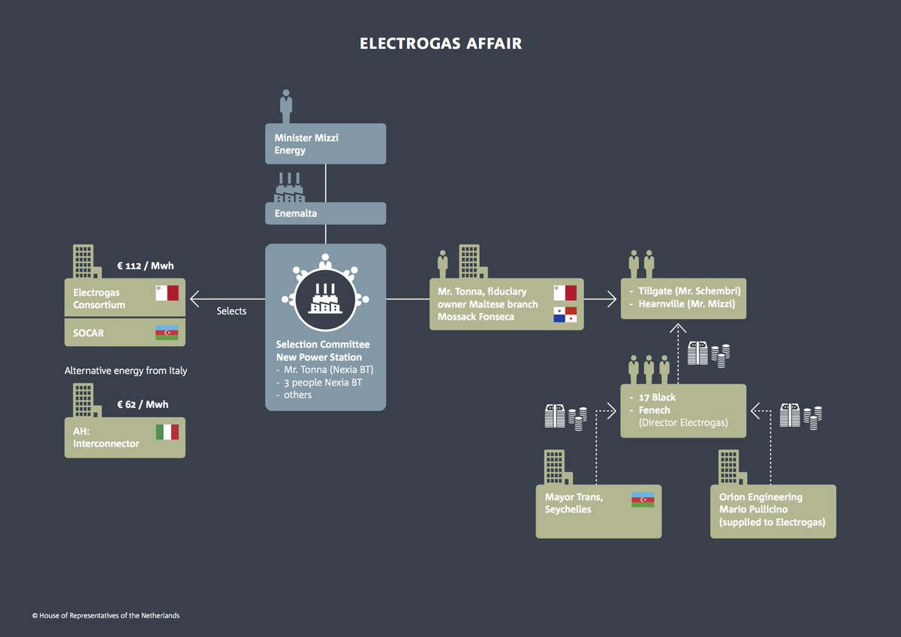
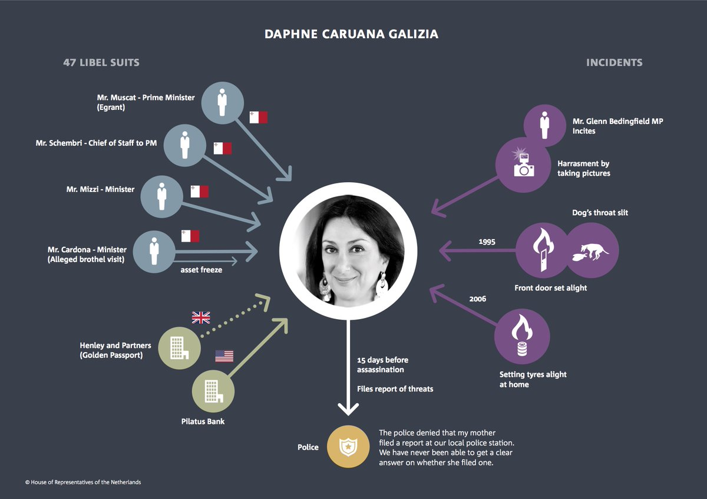

Tweets
-
(politieverhoor) Zij: dus 't springkussen lek gestoken? Ik: ja Zij: omdat je er niet op mocht? Ik: ja Zij: in de ranja gepist? Ik: ja Zij: omdat je niks kreeg? Ik: ja Zij: nog meer? Ik: konijnenkeutels in de snoepzakken Zij: nee toch Ik: ja Zij: 't was 'n kinderfeest! Ik: nou en
Translated from Dutch by MicrosoftThanks. Twitter will use this to make your timeline better. UndoShow fewer Tweets from Katjoek BolderThis Tweet isn’t relevantUndo -
Dus je mag niet zeggen, stad ‘x’ of ‘y’ is niet meer Frans/Nederlands/Engels, maar je moét wel zeggen dat het goed is dat steden ‘divers’ zijn.
Translated from Dutch by MicrosoftThanks. Twitter will use this to make your timeline better. UndoShow fewer Tweets from Sietske BergsmaThis Tweet isn’t relevantUndo -
Shirin Musa Retweeted
Echt on-ge-loof-lijk. Kamervraag op kamervraag van
@PieterOmtzigt over de wanhopig slechte casus van de Belastingdienst. PvdA was nergens. En wie zit we over in Pauw??? (Echt, het is veel werk om onrecht te agenderen. Dan het Kamerlid dat dit heeft gedaan passeren is niet oké)https://twitter.com/pauwnl/status/1133802688293015553 …0:24Translated from Dutch by MicrosoftShow this threadThanks. Twitter will use this to make your timeline better. UndoShow fewer Tweets from Renske LeijtenShow fewer Retweets from Shirin MusaThis Tweet isn’t recentThis Tweet isn’t relevantUndo -
Ricky Gervais Retweeted
@rickygervais was absolutely hilarious in Bournemouth last night.@watsoncomedian was a brilliant support act too. Had such a good evening!Thanks. Twitter will use this to make your timeline better. UndoShow fewer Tweets from Abi MayShow fewer Retweets from Ricky GervaisThis Tweet isn’t recentThis Tweet isn’t relevantUndo -
Who to follow · Refresh
-
@SterkNikki
Schrijft en onderzoekt bij
@FTM_nl,@rtlz,@vrij_nederland,@raneurope,@UniUtrecht | werkt aan PhD … -
@tomjanmeeus
Politiek columnist NRC di do/ za Haagse Invloeden/ http://goo.gl/hD4DOf / oud-correspondent VS, oud-onderzoeksjournalist/ tijd heelt alle…
-
Verified account@eelcobvr
Reporter/anchor Dutch TV
@Nieuwsuur (NOS/NTR) |Droomland Amerika (VPRO) http://www.vpro.nl/programmas/droomland-amerika.html … | ebvr@protonmail.com | DM/Signal -
Verified account@OwenJones84
Socialist, anti-fascist, Guardian columnist, author, owner of 2 ridiculous cats, losing my Northern accent with every passing day. Sad.
OK. You won’t see these as much. UndoUndo -
-
Arjen H. Lubach Retweeted
I can’t get a normal or helpful response from
@TwitterSupport regarding an important issue. Please retweet this and help me to get their attention in person.Thanks. Twitter will use this to make your timeline better. UndoShow fewer Tweets from Arjen H. LubachShow fewer Retweets from Arjen H. LubachThis Tweet isn’t recentThis Tweet isn’t relevantUndo -
Shirin Musa Retweeted
De Raad van Europa heeft mijn rapport over de aanslag op journaliste Daphne Caruana Galizia en de rechtstaat in Malta (en tegen de wil van de Maltese regering) aangenomen (1)https://www.ad.nl/politiek/vernietigend-rapport-over-maffiastaat-malta-corruptie-en-vriendjespolitiek-zijn-overal~aaacb7ed/ …
Translated from Dutch by MicrosoftShow this threadThanks. Twitter will use this to make your timeline better. UndoShow fewer Tweets from Pieter OmtzigtShow fewer Retweets from Shirin MusaThis Tweet isn’t recentThis Tweet isn’t relevantUndo -
Joris van Hoboken and João Pedro Quintais liked
Who is a journalist in the digital age? The perennial question is addressed by the
#ECJ in its Buivids judgment. My quick take on the Court’s exploration of the blurred zone between privacy/data protection and freedom of expression/information: https://www.ivir.nl/publicaties/download/Annotatie_EHRC_2019_5_84.pdf …Thanks. Twitter will use this to make your timeline better. UndoShow fewer Tweets from Tarlach McGonagleShow fewer likes from Joris van HobokenShow fewer likes from João Pedro QuintaisThis Tweet isn’t recentThis Tweet isn’t relevantUndo -
Jacinda Ardern unveils $26billion 'well-being' budget as she vows to measure New Zealand's success on happiness of citizenshttps://trib.al/Fg7w5Ru
Thanks. Twitter will use this to make your timeline better. UndoShow fewer Tweets from Daily Mail OnlineThis Tweet isn’t relevantUndo -
Shirin Musa Retweeted
Journalisten als
@pieterkleinrtl en@JanTrouw die uren en dagen hebben gespit in WOB-stukken. En dan een ander laten shinen?Translated from Dutch by MicrosoftShow this threadThanks. Twitter will use this to make your timeline better. UndoShow fewer Tweets from Renske LeijtenShow fewer Retweets from Shirin MusaThis Tweet isn’t recentThis Tweet isn’t relevantUndo -
Brahim Zarouali liked
And as last presentation of what has been an incredible rich day: the missing link:
@katreilly_ explains the economic dynamics behind the platform economy. We need more research like this into the economic aspects of the rise of platforms!#ICA2019Thanks. Twitter will use this to make your timeline better. UndoShow fewer Tweets from natalihelbergerShow fewer likes from Brahim ZaroualiThis Tweet isn’t recentThis Tweet isn’t relevantUndo -
De Groene Amsterdammer Retweeted
Wat een prachtig stuk van Koen Kleijn! Is het eigenlijk wel mogelijk, de gebroken Franse ziel herstellen? https://www.groene.nl/artikel/de-ziel-van-frankrijk-mooier-dan-ooit … via
@DeGroeneTranslated from Dutch by MicrosoftThanks. Twitter will use this to make your timeline better. UndoShow fewer Tweets from Mathieu SegersShow fewer Retweets from De Groene AmsterdammerThis Tweet isn’t recentThis Tweet isn’t relevantUndo -
-
Narrator: “He is you know, he just doesn’t want to tell the pollsters”https://twitter.com/johnmcternan/status/1134007057340862464 …
Thanks. Twitter will use this to make your timeline better. UndoShow fewer Tweets from Joshua LivestroThis Tweet isn’t relevantUndo -
Rob McCargow #AIforGood liked
My new book SUPERIOR officially lands in bookstores TODAY. Thank you to
@clivecookson for this incredible review in the@FT: https://amp.ft.com/content/92d2b56c-7ae5-11e9-81d2-f785092ab560?__twitter_impression=true …Thanks. Twitter will use this to make your timeline better. UndoShow fewer Tweets from Angela SainiShow fewer likes from Rob McCargow #AIforGoodThis Tweet isn’t recentThis Tweet isn’t relevantUndo -
Shirin Musa Retweeted
Mijn toelichting op het rapport over de aanslag op Daphne Caruana Galizia (2)https://www.trouw.nl/democratie/-op-malta-is-een-compleet-gebrek-aan-tegenmacht-~af748a380/ …
Translated from Dutch by MicrosoftShow this threadThanks. Twitter will use this to make your timeline better. UndoShow fewer Tweets from Pieter OmtzigtShow fewer Retweets from Shirin MusaThis Tweet isn’t recentThis Tweet isn’t relevantUndo -
Shirin Musa Retweeted
Bij Pauw de schandalige behandeling van ouders die zogenaamd zouden frauderen.
@henknijboer pleit voor de menselijke maat bij de Belastingdienst. Gelukkig nam de Tweede Kamer al in maart mijn voorstel daarvoor over https://www.tweedekamer.nl/kamerstukken/moties/detail?id=2019Z05639&did=2019D11721 …Translated from Dutch by MicrosoftThanks. Twitter will use this to make your timeline better. UndoShow fewer Tweets from Renske LeijtenShow fewer Retweets from Shirin MusaThis Tweet isn’t recentThis Tweet isn’t relevantUndo -
Ricky Gervais Retweeted
@rickygervais had me in stitches last night at the Bournemouth International Centre. All I have to say is#ThatWontMakeNetflix#SuperNatureThanks. Twitter will use this to make your timeline better. UndoShow fewer Tweets from Jake Harris ♔Show fewer Retweets from Ricky GervaisThis Tweet isn’t recentThis Tweet isn’t relevantUndo -
Claes de Vreese liked
We need more research into the history of the rise of platforms as this presentation by
@HeidiTworek at the platform post@ICA2019 conference https://riseofplatforms.wordpress.com/ !Thanks. Twitter will use this to make your timeline better. UndoShow fewer Tweets from natalihelbergerShow fewer likes from Claes de VreeseThis Tweet isn’t recentThis Tweet isn’t relevantUndo -
I did a thing!! I'm having a table top game moment I guess. Check out GameNight on
@BoardGameGeek's channel on Youtube. It's a great way to learn about all the cool games out there. And I'll be on some up coming episodes. Thanks for having me players!!https://twitter.com/heccubustwit/status/1133869894024486912 …Thanks. Twitter will use this to make your timeline better. UndoShow fewer Tweets from Deborah Ann WollThis Tweet isn’t relevantUndo -
Shirin Musa Retweeted
Here’s the full text of the report by
@PieterOmtzigt into the assassination of#DaphneCaruanaGalizia and the rule of law in#Malta, just adopted... http://www.assembly.coe.int/LifeRay/JUR/Pdf/TextesProvisoires/2019/20190529-CaruanaGaliziaAssassination-EN.pdf …https://twitter.com/pace_legalhr/status/1133682532501921792 …Thanks. Twitter will use this to make your timeline better. UndoShow fewer Tweets from PACEShow fewer Retweets from Shirin MusaThis Tweet isn’t recentThis Tweet isn’t relevantUndo -
Opinion: Are we becoming too stupid to govern ourselves?https://wapo.st/2EGBNds
Thanks. Twitter will use this to make your timeline better. UndoShow fewer Tweets from The Washington PostThis Tweet isn’t relevantUndo -
Datadog unifies your metrics, logs, and distributed request traces in one platform, so you can investigate and troubleshoot issues across every layer of your stack. It's easy for teams to resolve issues quickly, collaborate, and release features faster. Try it for free today:
0:19 -
Thai tycoon adds $2.5 billion to his fortune on beer, spiritshttps://bloom.bg/2EHUHAD
Thanks. Twitter will use this to make your timeline better. UndoShow fewer Tweets from BloombergThis Tweet isn’t relevantUndo -
Het Witte Huis heeft de Amerikaanse marine bevolen de naam af te dekken van een oorlogsschip dat vernoemd is naar de vorig jaar overleden senator John McCainhttps://www.parool.nl/wereld/witte-huis-liet-naam-schip-mccain-afdekken~bf2a6307/ …
Translated from Dutch by MicrosoftThanks. Twitter will use this to make your timeline better. UndoShow fewer Tweets from Het ParoolThis Tweet isn’t relevantUndo -
Shirin Musa Retweeted
Een overzicht van de macht van de Minister President van Malta. Hij benoemt rechters, de korpschef van de politie, ministers, topambtenaren, heel veel toezichthouders en meer (3)pic.twitter.com/qMDmGozv2O
Translated from Dutch by MicrosoftShow this threadThanks. Twitter will use this to make your timeline better. UndoShow fewer Tweets from Pieter OmtzigtShow fewer Retweets from Shirin MusaThis Tweet isn’t recentThis Tweet isn’t relevantUndo -
Grant Sanderson and 9 others follow
You have no responsibility to live up to what other people think you ought to accomplish. I have no responsibility to be like they expect me to be. It's their mistake, not my failing.pic.twitter.com/gbyP2OBKCF
Thanks. Twitter will use this to make your timeline better. UndoShow fewer Tweets from Richard FeynmanShow fewer follows from Grant SandersonShow fewer follows from Ali A. RizviThis Tweet isn’t recentThis Tweet isn’t relevantUndo -
"Parents know best for their children." When asked about protests over LGBT classes, Tory leadership candidate Esther McVey told
#Sunrise parents should have "final say on what they want their children to know". Teachers are in tears as the row worsens: http://po.st/7vsnwi pic.twitter.com/Dmo5KGEyUVEsther McVey on protests over LGBT lessonsThanks. Twitter will use this to make your timeline better. UndoShow fewer Tweets from Sky NewsThis Tweet isn’t relevantUndo -
Brahim Zarouali liked
Super relevant research by
@KathTX and@_JordanWolf#ICA19 postconference on how platforms deadlocked FEC's efforts to regulate digital political advertising. Check out their pre-print at https://www.sciencedirect.com/science/article/abs/pii/S0308596118304105 … Totally worth reading!Thanks. Twitter will use this to make your timeline better. UndoShow fewer Tweets from natalihelbergerShow fewer likes from Brahim ZaroualiThis Tweet isn’t recentThis Tweet isn’t relevantUndo -
Shirin Musa Retweeted
Een voorbeeld van een affaire in Malta - Veel te dure electriciteitscentrale (82% te dure electriciteit) - Degene die selecteert, opent ook rekeningen in Panama - begunstigde oa de minister zelf. (4)pic.twitter.com/8cQbcTK6LU
Translated from Dutch by MicrosoftShow this threadThanks. Twitter will use this to make your timeline better. UndoShow fewer Tweets from Pieter OmtzigtShow fewer Retweets from Shirin MusaThis Tweet isn’t recentThis Tweet isn’t relevantUndo -
Schrijvers die zich schamen voor autobiografische elementen in hun verhaal, nemen een pseudoniem aan. Maar wat als dat pseudoniem wordt uitgenodigd voor presentaties en interviews? In de film J.T. Leroy zien we dat compleet uit de hand lopenhttps://www.nrc.nl/nieuws/2019/05/29/literair-bedrog-de-film-a3962041 …
Translated from Dutch by MicrosoftThanks. Twitter will use this to make your timeline better. UndoShow fewer Tweets from NRCThis Tweet isn’t relevantUndo -
Anne Kroon likedThanks. Twitter will use this to make your timeline better. UndoShow fewer Tweets from Joris LuyendijkShow fewer likes from Anne KroonThis Tweet isn’t recentThis Tweet isn’t relevantUndo
-
Maak vandaag uw eigen prachtige website. Met Wix is het gratis en gemakkelijk!https://cards.twitter.com/cards/3xmtu/5ja8l …
Translated from Dutch by Microsoft -
Judith Moeller and 2 others liked
Very nice report (thanks
@theoaraujo) from the launch of our Human(e) AI program@UvA_Amsterdam: https://humane-ai.nl/events/university-of-amsterdam-launches-the-rpa-humane-ai-to-uncover-the-societal-consequences-of-artificial-intelligence-and-automated-decision-making/ … Thanks all speakers and co-organizers@tpoell@theoaraujo@jjnoordegraaf@nhelberger#SonjaSmets. Read it and also check the Fishbowl pictures

 pic.twitter.com/JBv5gpHhc3Thanks. Twitter will use this to make your timeline better. UndoShow fewer Tweets from Claes de VreeseShow fewer likes from Judith MoellerShow fewer likes from natalihelbergerThis Tweet isn’t recentThis Tweet isn’t relevantUndo
pic.twitter.com/JBv5gpHhc3Thanks. Twitter will use this to make your timeline better. UndoShow fewer Tweets from Claes de VreeseShow fewer likes from Judith MoellerShow fewer likes from natalihelbergerThis Tweet isn’t recentThis Tweet isn’t relevantUndo -
The Web Foundation Retweeted
NOW: Founding director of the
@webfoundation and the inventor of the world wide web -@timberners_lee in a chat with@Opentext CEO & CTO Mark Barrenechea sit down for a chat ..#OGPCanada#OGPSummit2019pic.twitter.com/XB7vOuOiHDThanks. Twitter will use this to make your timeline better. UndoShow fewer Tweets from NnennaShow fewer Retweets from The Web FoundationThis Tweet isn’t recentThis Tweet isn’t relevantUndo -
Deze wagen van Leuvense studenten rijdt 130 km/u in amper 3 seconden. http://bit.ly/2WzeYSX pic.twitter.com/3cXK1YzBnX
Translated from Dutch by MicrosoftThanks. Twitter will use this to make your timeline better. UndoShow fewer Tweets from VTM NIEUWSThis Tweet isn’t relevantUndo -
Shirin Musa Retweeted
Daphne Caruana Galizia stond onder hoge druk - 47 smaadzaken, van de Minister-President, ministers - in het verleden: brandstichting, keel van de hond doorgesneden _ en meer (5)pic.twitter.com/NnM6UhKTHo
Translated from Dutch by MicrosoftShow this threadThanks. Twitter will use this to make your timeline better. UndoShow fewer Tweets from Pieter OmtzigtShow fewer Retweets from Shirin MusaThis Tweet isn’t recentThis Tweet isn’t relevantUndo -
The Independent Retweeted
A piece on Eden Hazard’s illuminating lap of honour around (most) of the world’s media last night http://ind.pn/2MgLwNJ
#CFCThanks. Twitter will use this to make your timeline better. UndoShow fewer Tweets from Luke BrownShow fewer Retweets from The IndependentThis Tweet isn’t relevantUndo -
‘Migranten, vind een baan. Anders heb je in Denemarken niets te zoeken’
@KemalRijkenhttps://www.groene.nl/artikel/denemarken-heeft-haar-eigen-forum-voor-democratie …Translated from Dutch by MicrosoftThanks. Twitter will use this to make your timeline better. UndoShow fewer Tweets from De Groene AmsterdammerThis Tweet isn’t relevantUndo -
A tale of two Adam Goodes films: docos on AFL legend put racism in big picturehttps://www.theguardian.com/sport/2019/may/30/a-tale-of-two-adam-goodes-films-docos-on-afl-legend-put-racism-in-big-picture?utm_term=Autofeed&CMP=twt_b-gdnnews&utm_medium=Social&utm_source=Twitter#Echobox=1559196239 …
Thanks. Twitter will use this to make your timeline better. UndoShow fewer Tweets from Guardian newsThis Tweet isn’t relevantUndo -
Chelsea got the better of its English Premier League rivals to win the Europa League, beating Arsenal 4-1 amid a strange atmosphere in the Baku Olympic Stadiumhttps://cnn.it/2IbPuC5
Thanks. Twitter will use this to make your timeline better. UndoShow fewer Tweets from CNNThis Tweet isn’t recentThis Tweet isn’t relevantUndo -
EU citizens in UK at risk of 'Windrush-style catastrophe', say MPshttps://www.theguardian.com/uk-news/2019/may/30/eu-citizens-in-uk-at-risk-of-windrush-style-catastrophe-say-mps?utm_term=Autofeed&CMP=twt_gu&utm_medium=&utm_source=Twitter#Echobox=1559203691 …
Thanks. Twitter will use this to make your timeline better. UndoShow fewer Tweets from The GuardianThis Tweet isn’t relevantUndo -
Today we’re introducing
#AdobeScan’s new capture modes for iOS and Android. Get the full picture here. https://adobe.ly/2QeqPjQ pic.twitter.com/MruQTSLmEd0:10188K viewsCapture Modes Debut in Adobe ScanToggle between a variety of capture modes to ensure that your documents, forms, whiteboards and business cards are captured picture-perfectly, every time. -
The Independent Retweeted
The Irishman delayed because 'young' Robert De Niro doesn't look threatening enough after CGIhttps://ind.pn/2wszciq
Thanks. Twitter will use this to make your timeline better. UndoShow fewer Tweets from Independent FilmShow fewer Retweets from The IndependentThis Tweet isn’t relevantUndo -
Alexandria Ocasio-Cortez reveals her chilling morning ritual in face of death threatshttps://www.indy100.com/article/aoc-death-threats-fresno-grizzles-video-enemy-freedom-kim-jong-un-8935081 …
Thanks. Twitter will use this to make your timeline better. UndoShow fewer Tweets from The IndependentThis Tweet isn’t relevantUndo


Loading seems to be taking a while.
Twitter may be over capacity or experiencing a momentary hiccup. Try again or visit Twitter Status for more information.